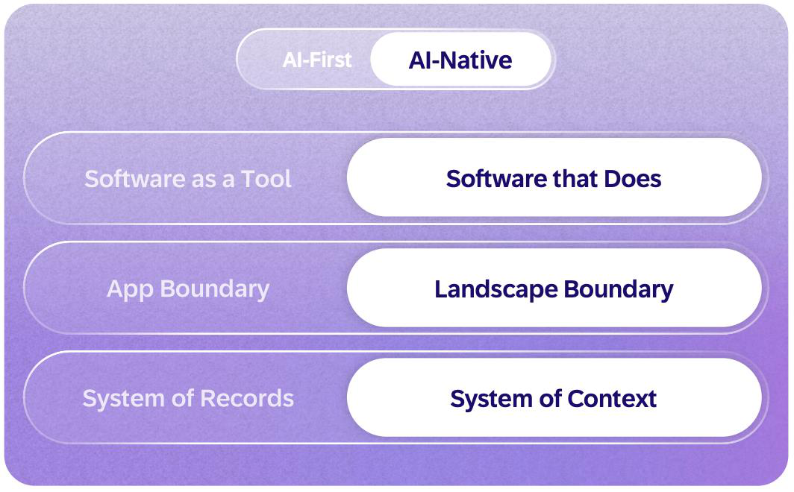

AI-First에서 AI-Native로

01 · Software
도구에서 실행 주체로
사람은 목표를 정하고, Agent는 허용된 작업을 실행합니다.
02 · Landscape
앱을 넘어 전사 업무로
시스템 · 조직 · 프로세스 간 업무를 연결합니다.
03 · Context
기록에서 업무 문맥으로
데이터에 의미 · 관계 · 정책을 함께 연결합니다.

사람은 목표를 정하고, Agent는 허용된 작업을 실행합니다.
시스템 · 조직 · 프로세스 간 업무를 연결합니다.
데이터에 의미 · 관계 · 정책을 함께 연결합니다.